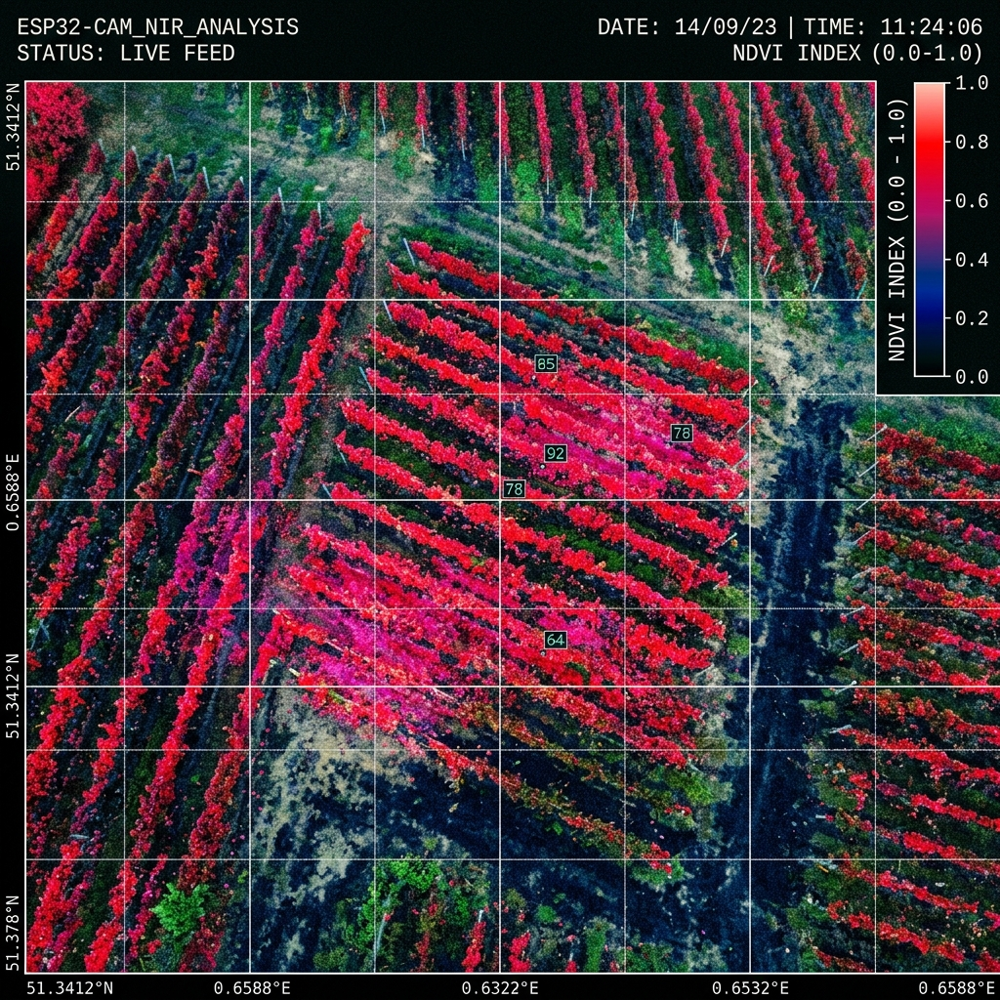

Pomelo farm managers in the SOCCSKSARGEN region face a critical lack of early warning systems. Traditional visual inspections fail to detect crop stress before significant yield loss occurs. This reactive approach leads to wasted resources, uncontrolled disease spread, and decreased profitability.
Our Solution
P.R.I.D.E. shifts your orchard from reactive to proactive management. By deploying autonomous drone swarms, we conduct frequent, high-resolution scans of your plantation. Our data pipeline identifies hidden stress factors weeks before human eyes can spot them, enabling targeted interventions.
Hardware & Intelligence
ESP32-CAM Architecture
We've developed a custom, lightweight payload centered around the ESP32-CAM module. This allows for massive scalability and extended drone flight times without sacrificing the resolution needed for high-fidelity crop analysis.
Pseudo-NIR Imaging
Our modified camera arrays capture light beyond the visible spectrum. By generating pseudo-NIR (Near-Infrared) imagery, we analyze the chlorophyll density of each tree, uncovering hidden stress signatures caused by drought, pests, or disease.
Signal Processing & AI
Raw image data is processed through our proprietary neural networks. We filter out noise and classify stress levels with >94% accuracy, delivering actionable geographic coordinates directly to farm managers.

ANALYSIS:PROCESSING...
STRESS DETECTED:14% (BLOCK C)
Data-Driven Impact
~20%Yield Improvement
40%Reduction in Chemical Usage
14 DaysEarly Warning Advantage
Ready to Optimize Your Orchard?
Get in touch to schedule a demo flight and see how P.R.I.D.E. can transform your pomelo farm operations.
Kabacan, North Cotabato, SOCCSKSARGEN, Philippines